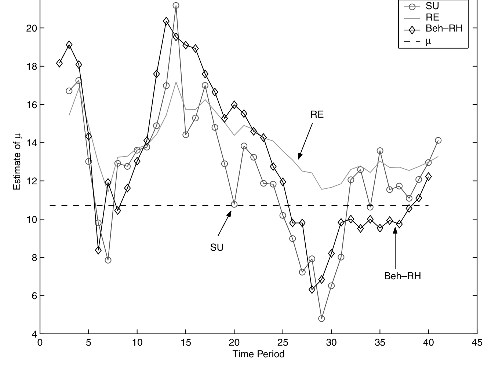
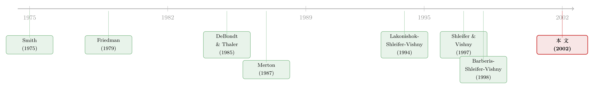

理性的贝叶斯学习，为什么会长出「行为偏差」的脸
本文读的是 Brav & Heaton (2002, Review of Financial Studies)：作者把「行为」理论（投资者非理性）和「理性结构不确定性」理论（投资者完全理性、却不知道经济的真实结构）放进同一个极简模型里对照，发现这两套看似对立的解释——一个放松「理性」、一个放松「完全信息」——在数学形式和实证预测上竟是一对双胞胎，难以区分。更妙的反转是：即便异象真的由非理性引起，它要不要消失，仍然取决于理性套利者能不能否决掉那个与之孪生的理性解释。
1 一个吵了二十年的架
先把舞台搭起来。
所谓金融异象 (financial anomaly)，是一种被反复记录下来的价格行为模式，它和传统的有效市场、理性预期资产定价理论的预测对不上。而那套传统理论，骨子里立着两根柱子：第一，投资者几乎完全知道自己所处经济的基本结构；第二，投资者是完全理性的信息处理器，做的是最优的统计决策。用 Friedman (1979) 的话说，理性预期世界里的投资者「既掌握『真实』经济模型的正确设定，又掌握其系数的无偏估计量」。
证据一旦开始和这套理论作对，人们就动手拆柱子。
首先，最有名的一拆，是行为金融。它拆掉的是第二根柱子——完全理性的信息处理。投资者保留着对经济结构的丰富知识，却被认知偏差绑住了手脚：Shiller (1981) 发现股价相对未来股利的变化「动得太多」；DeBondt and Thaler (1985) 拿心理学证据立起「过度反应」假说，发现过去的极端输家会跑赢极端赢家；到 Barberis, Shleifer, and Vishny (1998) 与 Daniel, Hirshleifer, and Subrahmanyam (1998)，干脆把保守性、过度自信这些偏差直接写进了代表性投资者的脑子里。
接着，一个自然的问题是：非要让投资者「犯傻」吗？
于是有了第二拆。它保留第二根柱子（投资者照样是完美的贝叶斯学习者），转而拆掉第一根——投资者其实不知道经济的真实结构。这就是作者所称的「理性结构不确定性 (rational structural uncertainty)」理论。Merton (1987) 让投资者只了解一部分证券，借此解释小公司效应；Barsky and DeLong (1993)、Timmerman (1993) 让理性投资者去估计未知的股利增长率，学习过程本身就造出了波动；Kurz (1994) 则系统地讨论了「不知道结构」的预期如何形成。这条线的共同点是：投资者一点都不傻，他只是不知道这个世界长什么样，于是在学习的路上犯下系统性的错误，或者要求一份额外的风险溢价。
两拆方向相反——一个动「理性」，一个动「信息」。直觉上，它们应该是泾渭分明的两套故事。
但这篇论文要讲的，恰恰是这个直觉错了。
2 把两套故事塞进同一个最小模型
要比较两个理论，最干净的办法是让它们在同一张桌子上、用同一套语言说话。作者搭的模型简单到近乎吝啬，但正因为吝啬，才把焦点死死钉在「投资者如何用先验、旧数据和新数据去估计一个估值相关参数」这件事上。
2.1 资产与投资者
每一期 \(t\) 开始，都有唯一一只一期期限的风险资产 \(A_t\) 凭空出现。它在期末支付 \(x_t\)，然后退场。假设
$$x_t \sim N(\mu_t,\ \sigma^2).$$
代表性投资者是风险中性的，于是他把每期资产定价在其期望支付 \(\mu_t\) 上——这个 \(\mu_t\) 就是「估值相关参数 (valuation-relevant parameter)」。关键在于：投资者并不知道 \(\mu_t\)。
那么，区分两个阵营的，是哪一件事？是 \(\mu\) 的稳定性。若 \(\mu_t = \mu^*\ \forall t\)，称 \(\mu\)「稳定」；若它随时间变化，则称「不稳定」。为了可解，作者假设到任意时刻 \(t=n\)，\(\mu\) 在过去 \(n\) 期里至多变过一次（也可能从未变）。所谓「完全的结构知识」，就是知道 \(\mu\) 到底稳不稳定；若不稳定，还知道那个变点 (change point) \(r \in \{1,\dots,n\}\) 落在哪里。
于是分工清楚了：
- 行为投资者：知道结构（知道稳不稳、变点在哪），但处理信息时犯认知偏差。
- 理性结构不确定性投资者：处理信息完全用贝叶斯方法，却不知道结构。
同一张桌子，三种估计量。
2.2 行为之一：代表性启发式
代表性启发式 (representativeness heuristic, RH)，源自 Kahneman and Tversky (1972)：人们指望关键的总体参数「被代表」在任何一小段近期数据里，于是高估近期证据、忽略基率与旧数据。作者把它极端化——投资者干脆只看最近一半的数据，先验和更早的数据一概不要：
$$\hat{\mu}_{Beh,RH} = \bar{x}_{n/2},$$
其中 \(\bar{x}_{n/2}\) 是最近 \(n/2\) 个支付的均值。注意这有多激进：一半的历史，连同全部先验，被直接扔进了垃圾桶。（关于「凭价格反推投资者到底有多外推」，可参见《想知道投资者信什么？去问价格，别问问卷》。）
2.3 行为之二：保守性
保守性 (conservatism, Edwards 1968) 恰是代表性启发式的反面：基率（先验和旧数据）被赋予过高的权重，新数据被低估。要刻画它，先得有一把「正确」的尺子。
假设 \(\mu\) 已知稳定，已实现支付相互独立，则似然为正态：
$$l(x_1,\dots,x_n \mid \mu,\sigma) \propto \sigma^{-n}\exp\!\left(-\frac{1}{2\sigma^2}\sum_{i=1}^{n}(x_i-\mu)^2\right).$$
取共轭先验
$$\mu \mid \sigma^2 \sim N(\mu_0,\ \sigma^2/\kappa_0), \qquad \sigma^2 \sim \text{Inv-}\chi^2(\nu_0,\ \sigma_0^2),$$
对 \(\sigma^2\) 积分后，\(\mu\) 的边际分布是 Student-t，风险中性投资者关心它的均值：
$$\hat{\mu} = \frac{\kappa_0\mu_0 + n\bar{x}_n}{\kappa_0+n}. \tag{2}$$
把它改写成先验均值与样本均值的加权平均，结构一目了然：
$$\hat{\mu} = \left(\frac{\kappa_0}{\kappa_0+n}\right)\mu_0 + \left(\frac{n}{\kappa_0+n}\right)\bar{x}_n. \tag{3}$$
权重随观测数 \(n\) 变化。保守性投资者无非是把先验那一头的「重量」人为加大——用一个 \(c>\kappa_0\) 替换 \(\kappa_0\)：
$$\hat{\mu}_{Beh,C} = \left(\frac{c}{c+n}\right)\mu_0 + \left(\frac{n}{c+n}\right)\bar{x}_n, \qquad c>\kappa_0. \tag{4}$$
只要 \(c>\kappa_0\)，先验永远被压上了比最优更高的砝码——这就是「保守」。
到这里为止，剧情还很常规：两种偏差，一种死盯近期（RH），一种死抱先验（C），分别对应过度反应和反应不足。真正关键的一步，在第三种估计量。
2.4 理性结构不确定性：会侦测变点的贝叶斯人
理性投资者和上面两位有两点根本不同：他用完全贝叶斯的方法；他不知道 \(\mu_t\) 稳不稳定，因此他的估计量必须把这份「无知」纳进来。
他怎么做？他假设支付 \(x_1,\dots,x_n\) 是这样生成的：在 \(t\in\{1,\dots,r\}\) 由均值 \(\mu_A\) 生成，在 \(t\in\{r+1,\dots,n\}\) 由新均值 \(\mu_B\) 生成。\(r\) 就是那个（理性投资者并不知道的）变点；\(r=n\) 表示「从未改变」，即 \(\mu_A\) 生成了全部支付。沿用 Smith (1975) 的单变点贝叶斯框架，他先对 \(n\) 个可能的变点设一个均匀先验——这意味着「从未变过」(\(r=n\)) 只拿到先验概率 \(1/n\)，而「发生过某种改变」的总概率高达 \((n-1)/n\)。换句话说，这个看似中立的均匀先验，其实是一个强烈相信 \(\mu\) 不稳定的「信息性先验」。
观测到数据后，变点的后验分布就是整套机制的引擎：
其中似然要对未知的 \(\mu_A,\mu_B,\sigma\) 积分掉：
$$p(x_1,\dots,x_n\mid r) = \int p(x_1,\dots,x_n\mid r,\mu_A,\mu_B,\sigma)\,p_0(\mu_A\mid\sigma)\,p_0(\mu_B\mid\sigma)\,p_0(\sigma)\,d\mu_A\,d\mu_B\,d\sigma. \tag{6}$$
最终对 \(\mu\) 的估计，是各条件后验按变点后验概率的加权平均：
$$p_n(\mu_i) = \sum_r p_n(\mu_i\mid r)\,p_n(r), \qquad (i=A,B). \tag{7}$$
抽象掉预测问题后，投资者用 \(\mu_n\) 的边际分布定价：
$$\sum_{r=1}^{n-1} p_n(\mu_B\mid r)\,p_n(r) \;+\; p_n(\mu_A\mid r=n)\,p_n(n).$$
请盯着这个加权结构看一眼，反转就在这里。
3 反转：理性的人，会犯「行为」的错
现在把三种估计量放进同一条样本路径里走一遍。如图 1 所示，作者画出了这三个估计量在一段典型路径上的轨迹。

Figure 1: reflects a typical sample path for these three estimators, given
魔术在于：那个完全贝叶斯的理性投资者，会在不同的数据环境下，自发地长出两张不同的「行为」面孔——
当数据看起来很平稳时，变点后验把绝大部分概率压在「从未变过」(\(r=n\)) 上。于是理性投资者会动用全部历史数据、连同先验一起来估计 \(\mu\)。结果？他显得迟钝、黏着旧观点、对新消息反应不足——这正是保守性、正是反应不足的长相。
而当近期出现了极端、异常的支付时，变点后验迅速倒向「最近发生了改变」。理性投资者于是抛弃变点之前的旧数据，把权重重重压在近期那几个观测上——这恰恰是代表性启发式、是过度反应的长相。不仅如此，一旦他「认定」变点已过，他对新均值 \(\mu_B\) 的后验会收得很窄，表现出过度的确定性——这正是行为文献里的第三种效应：过度自信 (overconfidence)。
一句话：一个从头到尾严守贝叶斯纪律、只是不知道结构的理性人，会内生地表演出保守性、代表性启发式与过度自信这三套行为偏差。 它对老数据与先验时而过度加权、时而极端轻视，全看变点后验当下倒向哪一边。两套理论放松的是相反的假设，长出来的预测却是同一副模样。
这就是论文标题里「competing」二字真正的分量——它们竞争，却又彼此难分。区分之所以难，一半是因为这种数学上的相似，另一半是因为实证证据本身被低估的特征：经验上，过度反应出现在较长期近期表现之后，反应不足出现在非常近期的极端表现或异常事件之后——而这两种环境，恰好同时符合两套理论里产生过度/反应不足的理由。（关于「过度反应」的另一种微观机制，可参见《好消息让你想起好消息：把「过度反应」拆回记忆的联想》；关于人在「被告知是随机游走」时仍忍不住预测，可参见《被告知是随机游走，他们还是忍不住预测下一步》。）
4 既然分不清，那还分它做什么？
到这里，一个尖锐的问题逼到面前：如果两套理论在数学和预测上都难以区分，我们何必纠结到底是哪一套？
作者的回答，是全文最漂亮的一笔，也是它真正的贡献：区分它们，对「异象会不会消失」这件事，关系重大。
一探到底，异象的长期消失，本质上是在追问学习与套利在每套理论里各自扮演什么角色。
如果异象由理性结构不确定性引起，那么它的消失，取决于理性投资者能不能逐渐校准到数据的结构特征。这在短期内绝非易事——哪怕经济的结构特征始终稳定；若这些特征本身在以不可预测的方式变化，这种学习甚至可能根本不可能完成。这其实是「收敛到理性预期均衡」那一大支文献的特例，而那支文献早已说清：理性预期均衡不会自动「发生」，哪怕给了主体学习的机会 [Blume and Easley (1982); Bray and Savin (1986)]。
而如果异象由非理性引起呢？这才是反转的反转：它的消失，仍然取决于理性学习——取决于理性套利者及其投资者，能不能否决掉那些为价格模式提供理性解释的竞争假说。
逻辑是这样的：非理性引起的异象，本撑不过理性套利者的存在，除非存在「套利的极限 (limits of arbitrage)」。而最有说服力的套利极限，恰恰建立在套利者的短期视野上 [Shleifer and Vishny (1997)]：套利者也许无法向投资者可信地传达自己的策略，因而无法把资金长期锁定在套利上；有些时候，套利者甚至说服不了自己那里真有可利用的错误定价。无论哪种情形，套利之所以受限，都卡在同一个难处——套利者和（或）他们的投资者，难以排除掉那个与行为解释孪生的、competing 的理性解释。
于是理性结构不确定性理论在这里获得了第二次生命：它正是套利者必须击败的那个「零假设」。 当理性解释容易被区分、被否决时，有效套利的极限就很小，非理性引起的异象也就不太可能存活；反之，当那个理性的孪生兄弟难以排除时，套利者就不敢下重注，异象便得以苟延。换句话说，哪怕你是个坚定的行为派，你也绕不开这套理性理论——因为它就是悬在你套利头上的那把剑。（关于套利者「也会怕」从而无法抹平异象，可参见《无风险的钱没人捡，是因为捡它的人也会怕》；关于不相信自己模型的投资者如何行动，可参见《当投资者不再相信自己的模型：稳健性如何撑起股权溢价》。）
5 文献脉络
把这条线捋直，它的来路其实很清晰。
源头是 Friedman (1979) 划下的那道分界：理性 (rationality) ≠ 理性预期 (rational expectations)——前者讲信息的利用，后者讲信息的可得。这道分界，正是日后「理性结构不确定性」一支得以立足的逻辑缝隙。
接着，两股力量分头生长。行为一支从 Shiller (1981) 的「波动过度」、DeBondt and Thaler (1985) 的「过度反应」出发，经 Lakonishok, Shleifer, and Vishny (1994) 的反向投资证据，到 Barberis, Shleifer, and Vishny (1998)、Daniel, Hirshleifer, and Subrahmanyam (1998) 与 Hong and Stein (1999)，把认知偏差正式模型化。理性一支则从 Merton (1987) 的不完全信息均衡起步，借 Smith (1975) 的变点贝叶斯工具，发展出一整套「学习生成异象」的故事。中间还横着 Shleifer and Vishny (1997) 的「套利的极限」——它本是为行为派护航的，却在本文里成了连接两支的枢纽。

这篇论文所处的位置，不在任何一支的延长线上，而是站在两支之间，做了一件别人没做的事：用一个共同的极小模型，证明它们是孪生的，并由此重新定义了「异象消失」这个问题的提法。
6 评论与延伸（Q&A + 研究方向）
(a) 几个可能的疑问
Q：这不就是「贝叶斯学习能产生异象」的老话吗，新在哪？
新在「对照」与「不可区分性」。Timmerman (1993)、Lewis (1989) 早已说明学习能造出波动与可预测性，但本文的贡献是把行为模型与理性学习模型放进同一个估值参数估计的框架，证明二者在数学形式与实证预测上彼此孪生，并据此论证：识别之难，本身就有经济后果。
Q：把代表性启发式硬设成「只用最近一半数据」、把保守性设成「\(c>\kappa_0\)」，是不是太随意？
作者自己也承认这是「相当任意」的设定。但论文的目的不是要拟合数据，而是用最透明的方式展示机制：先验、旧数据、新数据三者的权重如何被不同假设拨动。设定的具体数值不重要，重要的是三种估计量在加权结构上的可比性。
Q：那个「均匀先验」真的中立吗？
不中立，这恰是精妙处。对 \(n\) 个变点取均匀先验，意味着「从未变过」只占 \(1/n\)、「变过」占 \((n-1)/n\)——它其实是个强烈相信不稳定的信息性先验。正是这份先验，让理性投资者天然倾向于「侦测到变化」，从而频繁表演出过度反应。
Q：理性投资者「看起来过度自信」，和真的过度自信，有区别吗？
在可观测行为上几乎没有——这正是论文的要害。一旦变点后验收窄，理性贝叶斯人对新均值的确定性会陡增，外人看来与 Odean (1998)、Daniel-Hirshleifer-Subrahmanyam (1998) 笔下的过度自信无异。区别只在「为什么」，而「为什么」恰恰是数据难以分辨的。
Q：如果两者预测一样，这篇论文是不是在说「行为金融没意义」？
恰恰相反。它说的是：要判定异象由非理性引起，你必须先否决那个孪生的理性解释；而能否否决，决定了套利能否生效、异象能否消失。所以它抬高了行为派的举证门槛，却也赋予了理性理论一个不可替代的角色——做那个必须被击败的对手。
Q：风险中性、一期资产这套极简设定，会不会把结论做窄了？
作者论证它应当能推广：任何资产定价模型——无论对跨期权衡和多期支付怎么假设——都需要投资者对支付与参数的某种估计。只要先验与历史数据在这种估计里起作用，本文关于「权重如何被拨动」的结论就该适用。这是辩护，不是证明，留有余地。
(b) 几个可能的研究问题与提案
1. 把「孪生不可区分性」搬到公司债市场
【经济故事】公司债里有大量「反应不足/过度反应」式的异象（如评级调整后的漂移、发行后的长期表现）。若行为解释与「投资者在学习违约结构（违约率、回收率的变点）」的理性解释同样能拟合，那么二者在债市是否也孪生？ 【可行性】中。数据可得（TRACE 成交、Moody's/S&P 评级历史、违约数据），可把本文的变点贝叶斯估计量直接套到违约强度上。难点在于把「结构不确定性」与「流动性溢价」分离——债市的价差里混着太多流动性成分。
2. 用外资持有人作为「学习者」的自然实验
【经济故事】外国投资者对本地市场的「结构知识」天然更少，按本文逻辑，他们应当更频繁地「侦测变点」，表现出更强的过度反应/过度自信。这给了一个区分「非理性」与「结构不确定性」的杠杆：偏差强度应随结构知识的可得性单调变化，而非随「认知能力」变化。 【可行性】中高。可投资度 (investability) 提升、指数纳入等事件提供准自然实验；交易簿层面的数据（如韩国、台湾）能识别外资 vs 本地的反应差异。识别的关键是论证外资与本地在「认知偏差」上无系统差异，差的只是结构知识。
3. 异象消失速度 ~ 竞争性理性解释的「可否决性」
【经济故事】本文预测：一个异象越容易被一个 competing 理性解释解释掉，套利就越难、它消失得越慢。能否构造一个「理性可解释度」的代理变量（比如该异象是否伴随可观测的结构变化、基本面变点），去预测异象在样本外的衰减速度？ 【可行性】中。需要一个异象面板（如已发表异象的样本外表现，参见相关「异象衰减」文献）外加一个结构不确定性代理。难在「可否决性」难以客观度量，容易落入事后叙事。
4. 把变点贝叶斯人放进有限套利的均衡里
【经济故事】本文把「理性学习」与「有限套利」分别论述，但没把它们装进同一个均衡。若套利者本身也是变点贝叶斯人——他既要套非理性者的利，又说服不了自己「这不是一次结构变化」——套利的极限会内生地有多大？ 【可行性】低到中。纯理论，可在 Shleifer-Vishny (1997) 框架上叠加变点学习。挑战是可解性：变点后验与套利资本约束的耦合很可能没有闭式解，得靠数值。
7 我的判断
这篇论文的贡献，不在于提出又一个能拟合数据的新模型，而在于重新框定了问题。它用一个吝啬到极致的模型说清了一件容易被忽视的事：行为与理性结构不确定性是孪生兄弟，而正因为孪生，「异象会不会消失」就被翻译成了「理性套利者能否否决那个孪生的理性解释」。这个视角的转换，比任何单个系数都更有分量——它把行为金融的举证责任，和有效市场的存活条件，扣在了同一个扣子上。
要说担忧，主要有两处。其一是识别：论文最强的论点恰恰是「两者不可区分」，这在哲学上锋利，在实证上却近乎一个不可证伪的命题——如果什么都解释得通，那它对数据的约束就很弱。真正的进展，得靠找到能把两者撬开的额外矩条件（比如本文提示的「结构知识可得性」这个杠杆）。其二是设定的任意性：三种估计量的具体形式是手工挑的，结论对这些选择有多稳健，文中并未系统检验。
后续我最想看到的，是有人把这套「孪生」逻辑搬进一个可识别的实证场景——外资持有人、债市违约学习，都是天然的候选——去回答那个本文只在理论上点到的问题：现实里，套利者究竟有没有、以及多快，否决掉了那个理性的孪生兄弟。
参考文献
- Barberis, N., A. Shleifer, and R. W. Vishny (1998). A Model of Investor Sentiment. Journal of Financial Economics 49, 307–343.
- Blume, L. E., and D. Easley (1982). Learning to be Rational. Journal of Economic Theory 26, 340–351.
- Brav, A., and J. B. Heaton (2002). Competing Theories of Financial Anomalies. Review of Financial Studies 15(2), 575–606.
- Bray, M. M., and E. N. Savin (1986). Rational Expectations Equilibria, Learning and Model Specification. Econometrica 54, 1129–1160.
- Daniel, K., D. Hirshleifer, and A. Subrahmanyam (1998). Investor Psychology and Security Market Under- and Overreactions. Journal of Finance 53, 1839–1886.
- DeBondt, W. F. M., and R. H. Thaler (1985). Does the Stock Market Overreact? Journal of Finance 40, 793–807.
- Edwards, W. (1968). Conservatism in Human Information Processing. In B. Kleinmutz (ed.), Formal Representation of Human Judgement, John Wiley & Sons, 17–52.
- Friedman, B. M. (1979). Optimal Expectations and the Extreme Information Assumptions of Rational Expectations' Macromodels. Journal of Monetary Economics 5, 23–41.
- Hong, H., and J. Stein (1999). A Unified Theory of Underreaction, Momentum Trading, and Overreaction in Asset Markets. Journal of Finance 54, 2143–2184.
- Kahneman, D., and A. Tversky (1972). Subjective Probability: A Judgement of Representativeness. Cognitive Psychology 3(3), 430–454.
- Kurz, M. (1994). On the Structure and Diversity of Rational Beliefs. Economic Theory 4, 877–900.
- Lakonishok, J., A. Shleifer, and R. W. Vishny (1994). Contrarian Investment, Extrapolation, and Risk. Journal of Finance 49, 1541–1578.
- Merton, R. C. (1987). A Simple Model of Capital Market Equilibrium with Incomplete Information. Journal of Finance 42, 483–510.
- Shiller, R. J. (1981). Do Stock Prices Move Too Much to be Justified By Subsequent Changes in Dividends? American Economic Review 71, 421–436.
- Shleifer, A., and R. W. Vishny (1997). The Limits of Arbitrage. Journal of Finance 52, 35–55.
- Smith, A. F. M. (1975). A Bayesian Approach to Inference About a Change-Point in a Sequence of Random Variables. Biometrika 62, 407–416.